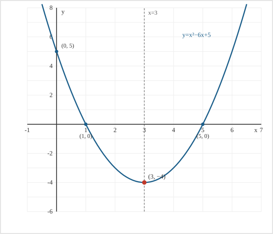

<script>if(location.hostname.endsWith('onrender.com'))location.replace('https://math-sandbox.github.io'+location.pathname+location.search+location.hash)</script>
<section class="theory" data-section="P1-1.6">
<h2>1.6 Maximum and minimum values of a quadratic function</h2>
<p class="src">Based on Cambridge International AS &amp; A Level Mathematics: Pure Mathematics 1 Coursebook (Hugh Neill, Douglas Quadling and Julian Gilbey), Chapter 1 Quadratics, printed pp.17–21 (the shape of a parabola, Worked example 1.13 style, completing the square, Key point 1.3, and Worked example 1.14 style). Printed pages were read from P1.pdf (printed 17–21 = PDF 29–33). Own wording and new numbers.</p>
<p class="key-words"><strong>Key words:</strong> <em>parabola</em>, <em>turning point</em>, <em>axis of symmetry</em>, <em>completing the square</em></p>
<h3>The turning point of a parabola</h3>
<p>The graph of a quadratic function \(f(x)=ax^2+bx+c\), with \(a\neq 0\), is a <strong>parabola</strong>. If \(a\gt 0\) the parabola has a minimum point; if \(a\lt 0\) it has a maximum point. That extreme point is the <strong>turning point</strong>. The vertical line through the turning point is the <strong>axis of symmetry</strong>.</p>
<p>One reliable way to find the turning point is by <strong>completing the square</strong>. If \(f(x)=a(x-h)^2+k\), then the axis of symmetry is \(x=h\), and the turning point is \((h,k)\): a minimum if \(a\gt 0\), and a maximum if \(a\lt 0\).</p>
<figure><figcaption>The parabola \(y=x^2-6x+5\) has a minimum turning point at \((3,-4)\) and axis of symmetry \(x=3\).</figcaption></figure>
<div class="worked-example">
<h4>Worked example 1: A minimum point</h4>
<p class="src">Book: Worked example 1.13 style, printed pp.18–19 (the book uses \(x^2-3x-4\)). New numbers, matching the graph above.</p>
<p>For the function \(f(x)=x^2-6x+5\):</p>
<p>(a) Find the points where the graph of \(y=f(x)\) meets the axes.<br/>(b) By completing the square, find the coordinates of the turning point, and state whether it is a maximum or a minimum.</p>
<ol class="steps">
<li>(a) When \(x=0\), \(y=5\). When \(y=0\), \(x^2-6x+5=0\), so \((x-1)(x-5)=0\). The intercepts are \((0,5)\), \((1,0)\) and \((5,0)\). <span class="mark">B1</span></li>
<li>(b) \(x^2-6x+5=(x-3)^2-9+5=(x-3)^2-4\). <span class="mark">M1</span></li>
<li>The turning point is \((3,-4)\). Since the coefficient of \(x^2\) is positive, this is a minimum point. The axis of symmetry is \(x=3\). <span class="mark">A1</span></li>
</ol>
<p class="final"><strong>Answer:</strong> (a) \((0,5)\), \((1,0)\), \((5,0)\) (b) minimum at \((3,-4)\)</p>
</div>
<div class="worked-example">
<h4>Worked example 2: A maximum point</h4>
<p class="src">Book: Worked example 1.14 style, printed p.20 (the book uses \(16x-7-4x^2\)). New numbers.</p>
<p>Express \(7+4x-x^2\) in completed-square form, and hence find the coordinates of the turning point of \(y=7+4x-x^2\). State whether this point is a maximum or a minimum.</p>
<ol class="steps">
<li>\(7+4x-x^2=7-(x^2-4x)=7-\bigl((x-2)^2-4\bigr)=11-(x-2)^2\). <span class="mark">M1</span></li>
<li>The turning point is \((2,11)\). The coefficient of \(x^2\) is negative, so this is a maximum point. <span class="mark">A1</span></li>
</ol>
<p class="final"><strong>Answer:</strong> \(11-(x-2)^2\); maximum at \((2,11)\)</p>
</div>
<h3>Common mistakes</h3>
<ul>
<li>Completing the square but then reading off \(h\) or \(k\) with the wrong sign.</li>
<li>Stating a maximum when \(a\gt 0\), or a minimum when \(a\lt 0\).</li>
<li>Giving only the \(x\)-coordinate of the turning point, or only the extreme value, when the coordinates were asked for.</li>
</ul>
<h3>Quick checks</h3>
<div class="quick-check">
<h4>Quick check 1</h4>
<p>By completing the square, find the minimum value of \(x^2-8x+7\).</p>
<details><summary>Worked solution</summary>
<ol class="steps">
<li>\(x^2-8x+7=(x-4)^2-16+7=(x-4)^2-9\). The minimum value is \(-9\) <span class="mark">A1</span></li>
</ol>
<p class="final"><strong>Answer:</strong> \(-9\)</p>
</details>
</div>
<div class="quick-check">
<h4>Quick check 2</h4>
<p>Find the \(x\)-coordinate of the turning point of \(y=2x^2-12x+5\).</p>
<details><summary>Worked solution</summary>
<ol class="steps">
<li>The axis of symmetry is \(x=\dfrac{12}{4}=3\), so the \(x\)-coordinate of the turning point is \(3\) <span class="mark">A1</span></li>
</ol>
<p class="final"><strong>Answer:</strong> \(3\)</p>
</details>
</div>
<div class="quick-check">
<h4>Quick check 3</h4>
<p>By completing the square, find the maximum value of \(15-2x-x^2\).</p>
<details><summary>Worked solution</summary>
<ol class="steps">
<li>\(15-2x-x^2=15-(x^2+2x)=15-\bigl((x+1)^2-1\bigr)=16-(x+1)^2\). The maximum value is \(16\) <span class="mark">A1</span></li>
</ol>
<p class="final"><strong>Answer:</strong> \(16\)</p>
</details>
</div>
<p class="marks-key"><strong>Marks:</strong> M = method, A = accurate answer (depends on M), B = independent mark. Leave exact values exact.</p>
</section>
